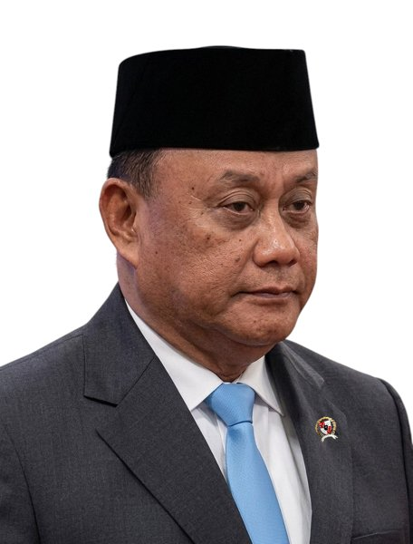
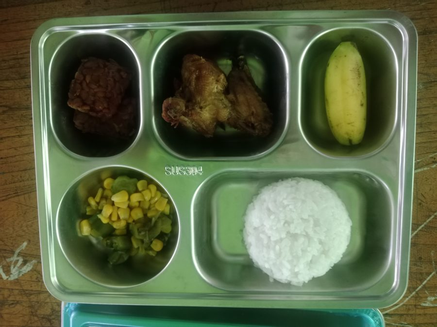
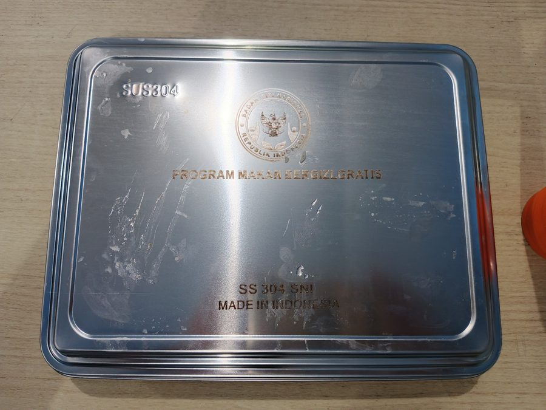
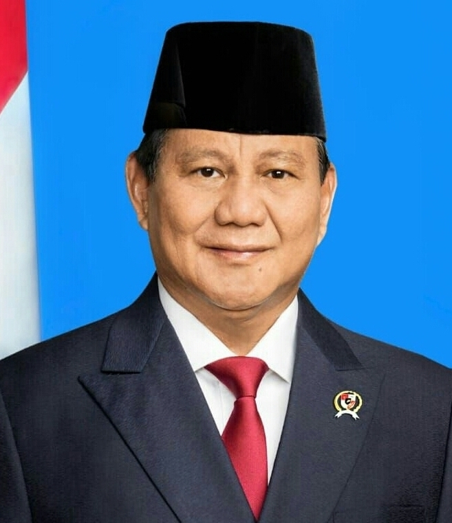

KopDes
Merah Putih
Radar Koruptor & Skandal MBG BGN
Kawal Mandat Presiden, Seret Oknum Pembajak Anggaran!
Kawal Program Merah Putih, Tumpas Koruptor Anggaran Rakyat!
Presiden ingin anak sekolah sehat lewat Makan Bergizi Gratis (MBG) dan desa mandiri pangan. Namun di Badan Gizi Nasional (BGN) dan rekanan daerah, anggaran raksasa ini rawan dibajak mafia katering, disunat porsinya, hingga hutan Kalimantan dibakar demi proyek yang tak kunjung panen.
Sorotan Badan Gizi Nasional (BGN)
Pagu: Rp 71+ Triliun
Penanggung Jawab & Rekanan Sunat Porsi MBG

KETUA BGN
Prof. Dadan Hindayana
Kepala Badan Gizi Nasional (BGN)
"Penanggung jawab program MBG Rp 71 Triliun. Janji menu bintang lima Rp 15.000, namun di lapangan porsi anak menyusut drastis akibat potongan vendor katering rekanan."

PORSI RP 7.500
Porsi Disunat Vendor
Nasi dingin, tempe seiris kartu, & susu impor rekondisi.

KATERING KRONI
Ompreng Basi & Rekanan
Wadah impor mewah, dapur rekanan tanpa sertifikasi higienis.
Alokasi Resmi:
Rp 15.000 / Anak
→
Sunat Vendor & Calo:
-Rp 7.500 / Anak
→
Sampai ke Meja Siswa:
Kenyang Angin
Hutan Gambut Kalimantan Terbakar: Triliunan Anggaran Jadi Abu & Asap
Mandat Presiden

"Basmi Koruptor & Selamatkan Pangan!"
VONIS 12 TH
TERPIDANA KORUPSI PANGAN
Syahrul Yasin Limpo
Korupsi Anggaran Kementan Rp 44 M
VONIS 5 TH
ORANG DEKAT TERJERAT
Edhy Prabowo
Suap Izin Ekspor Benur KKP
VONIS 12 TH
SUNAT BANSOS BERAS
Juliari Batubara
Potong Rp 10.000 / Paket Sembako
TARGET AUDIT WARGA
Oknum Calo MBG & Kades
Sunat Porsi Rp 15 Rb Jadi Rp 7.500
Food Estate & Karhutla
Ribuan Ha Hutan Kalimantan Dibakar Demi Proyek
Rp 71+ Triliun
Jangan Sampai Disunat Mafia MBG!